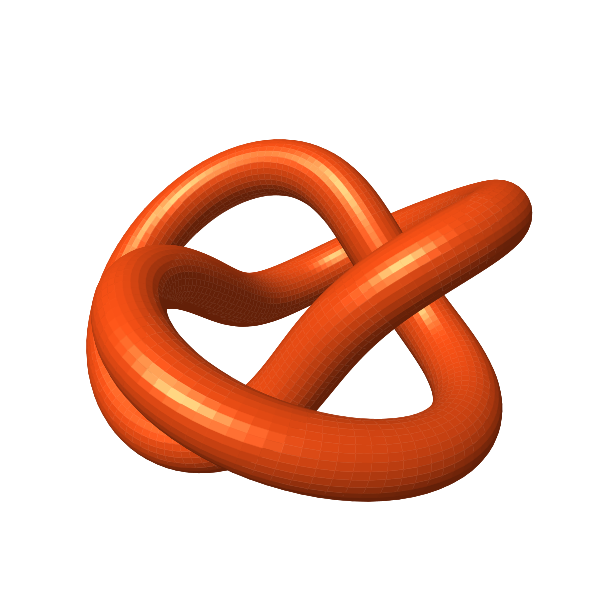

IDENTITY SYSTEM / 01 / OCT 2026Intelligence
in motion.
Flowly connects intelligence, systems and people. A confident, warm identity for technology that makes work flow. The visual language feels open, capable and human.
ذكاء يتحوّل إلى فعل.
01 / THE SIGNATUREA mark for connected possibility.
The symbol joins two directional curves: movement, connection and a way forward. Use the lowercase wordmark for approachability. Use the symbol alone for the favicon and compact controls.
| Rule | Usage |
|---|
| Clear space | At least one quarter of the symbol height around the complete lockup. |
| Minimum size | Wordmark 100 px wide for digital. Symbol 20 px; use 32 px for interface navigation. |
| Do | Use supplied vector colors, preserve aspect ratio and maintain contrast. |
| Avoid | Stretching, shadows on the logo, recoloring individual letters, outlines or photographic backgrounds without a clear field. |
02 / COLOR IN MOTIONWarm. Open. Unmistakably Flowly.
Flow Orange#ED541D · Signature
Warm Cream#F8F6F0 · Foundation
Soft Peach#F5E4D7 · Warmth
Quiet Sage#E9EDE4 · Support
Use cream generously. Orange signals action and possibility. Charcoal anchors information. Peach and sage provide quiet differentiation without competing for attention.
Accessible action color: #CE4816 with white labels. Small orange text on cream uses #BE3B0E. Dark foundation: #191D19, surface #222720, text #F4F1E9, orange highlight #FF8753.
03 / TYPOGRAPHYClarity, with a little character.
Less friction.
More possibility.
Manrope — English interface and body. Weights 400, 600 and 800. Restrained weight changes and generous space.
Instrument Serif Italic — short English headline accents. Use on one important phrase rather than whole paragraphs.
Noto Sans Arabic — Arabic interface and content. Weights 400 and 600. Real RTL layout, balanced line height, no artificial italics.
تعقيد أقل. إمكانيات أكبر.
04 / VOICEConfident enough to be clear.
Outcome first.
Start with the work the customer wants to improve. Explain the capability before naming the technology.
Human and direct.
Use useful verbs, specific deliverables and an obvious next step. Invite a conversation without pressure.
Grounded.
Make scope, ownership and status clear. No invented client logos, savings, certifications or certainty.
| Instead of | Say |
|---|
| Deploy an n8n instance. | Connect your lead capture, CRM and follow-up. |
| Revolutionary AI-powered digital transformation. | AI, software & automation. Built around your business. |
| Unlimited possibilities, guaranteed results. | Tell us what is slowing you down. Let’s build what moves you forward. |
05 / SYSTEMConnected by design.
Use a consistent 8 px spacing rhythm with 12–14 px card corners. Combine generous editorial sections with concrete interface demonstrations. Use thin borders instead of heavy shadows. Icons should use a coherent 1.5 px stroke. Keep the assistant in the bottom-right corner in both languages.
The orange loop artwork is a vector sculpture for the homepage. It represents a continuous path from understanding to action. Motion is slow and restrained; reduced-motion preferences disable animation.

YOUR NEXT CHAPTERBig possibilities.
One conversation.
Tell us what is slowing you down.
Let’s build what moves you forward.
Find your solution ↗